Agathe Sorel (1935 – 2020)
"Line in space has a structural density of its own... By cutting lines in transparent acrylic, I allow light to pass through the engraving, casting shadows that act as a second dynamic layer of the drawing."
Agathe Sorel was born in Budapest, Hungary. Fleeing to London after the Hungarian Revolution in 1956, she studied at the Camberwell School of Art. Later, she studied engraving in Paris under S.W. Hayter at Atelier 17. Sorel set up a print workshop in Fulham in 1960. From 1963, she pioneered Space Engravings on transparent acrylic (PVC and Perspex). Sorel served as Chairman of the Printmakers' Council (1981-1983) and was represented in major exhibitions worldwide.
Sorel was a pioneering printmaker, sculptor, and book artist. Combining three-dimensional volumes with etched lines on transparent acrylic sheets, she redefined printmaking and introduced the boundary-pushing medium of "Space Engravings."
Visual Portfolios
Prints Portfolio
Sculptures & Space Engravings
Watercolours & Collages
An Artist in Space and Time
Agathe Sorel's remarkable two-volume autobiography, comprising From Darkness to Hope and Projections in Space and Time, carves out the story of her extraordinary life. Agathe was in the very process of completing these memoirs when she passed away in June 2020.
Compiling this definitive record was a mammoth labor of love, during which she reconnected with distant friends from her youth, pulled in poignant stories, diaries, and letters from across three generations of her family, and gathered insights from her extensive professional network. True to her relentlessly innovative spirit as a visual artist, she meticulously designed and redesigned how the narrative should unfold and look, collaborating on new digital typography and illustrating the volumes with complex, hand-crafted digital montages of her life's work.
The book is now available for order. If you are interested in securing a copy of this beautifully curated piece of art history, please enquire for more details.
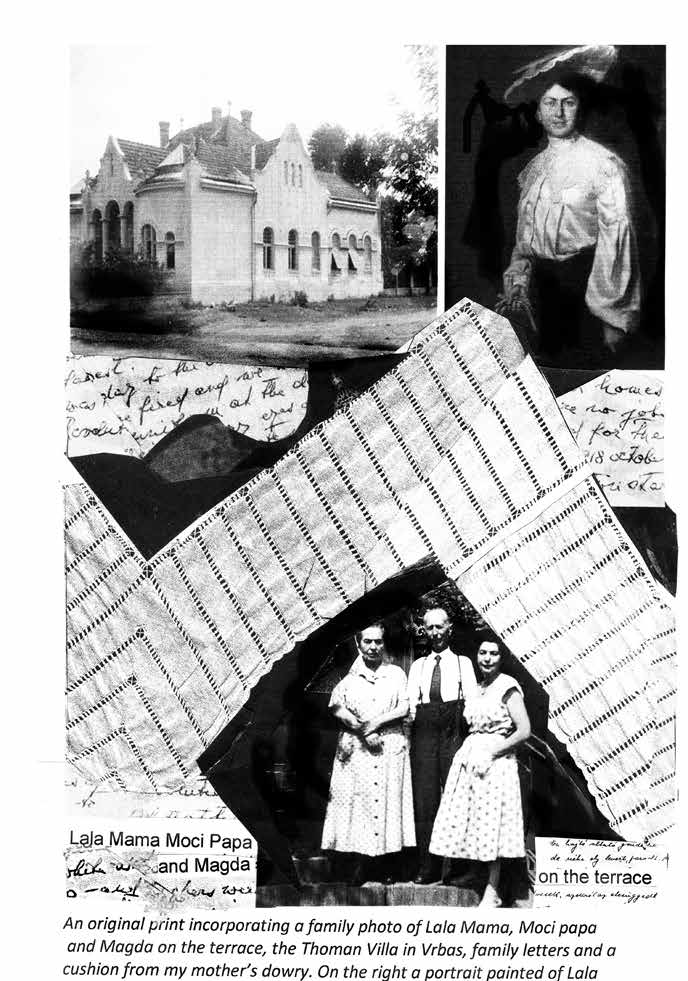
p. 14: Print with family photo, Vrbas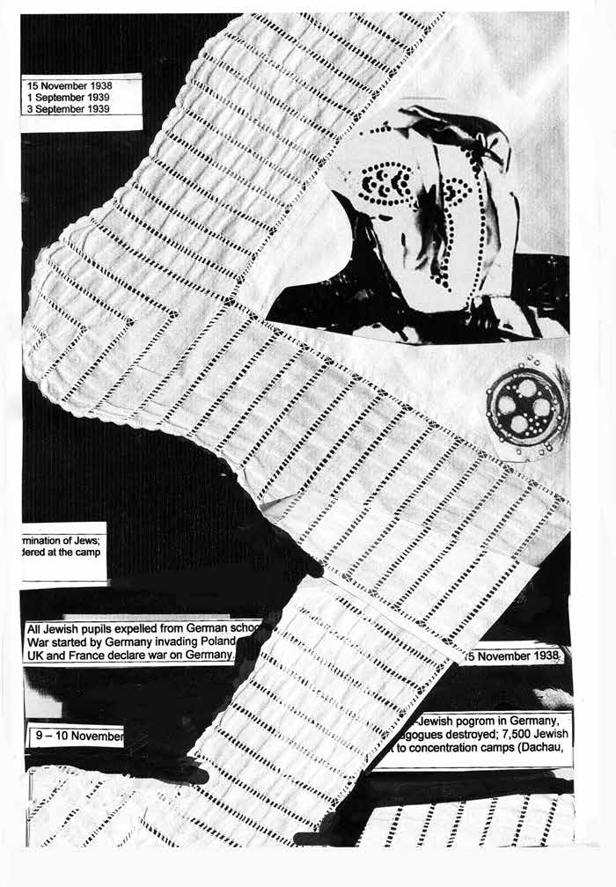
p. 17: Grandmother Lala Mama p. 24: Gyula Szüts (Father) Portrait
p. 24: Gyula Szüts (Father) Portrait
 p. 28: Balázs & Composer Bartók
p. 28: Balázs & Composer Bartók
Ancestry & Early Budapest Years
Agathe Sorel recounts her family ancestry and early childhood in Budapest, Hungary. Growing up in a vibrant but increasingly threatened Jewish community, these years establish her initial exposure to the visual arts and the cultural landscape of pre-war Europe before the outbreak of hostilities.
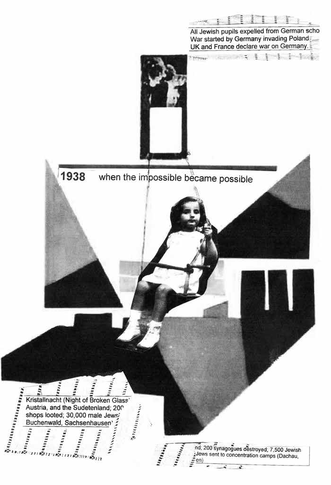
p. 37: Magda Posing as Model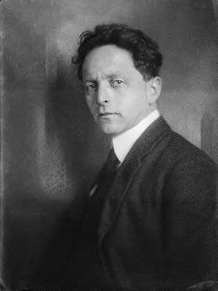
p. 28: Béla Bartók Study p. 30: Motorcade with Pacelli & Horthy
p. 30: Motorcade with Pacelli & Horthy
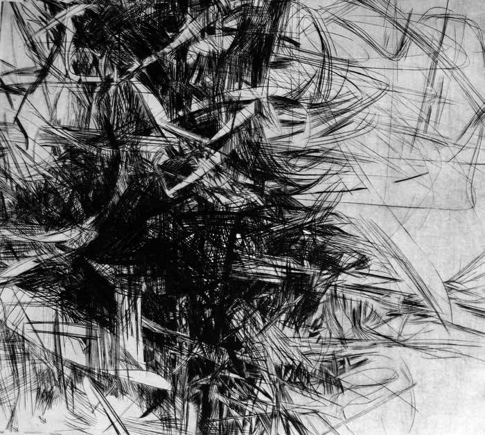
p. 20: Fumee (1961) — Line EngravingMy Childhood & First Drawings
Amidst the onset of war-time restrictions and severe shortages of materials, Sorel began her first artistic attempts. Her mother, Magda, patiently posed as a model for charcoal and pencil sketches, providing early support that would form the basis of her lifelong dedication to drawing.
 p. 47: The Physician of the State
p. 47: The Physician of the State
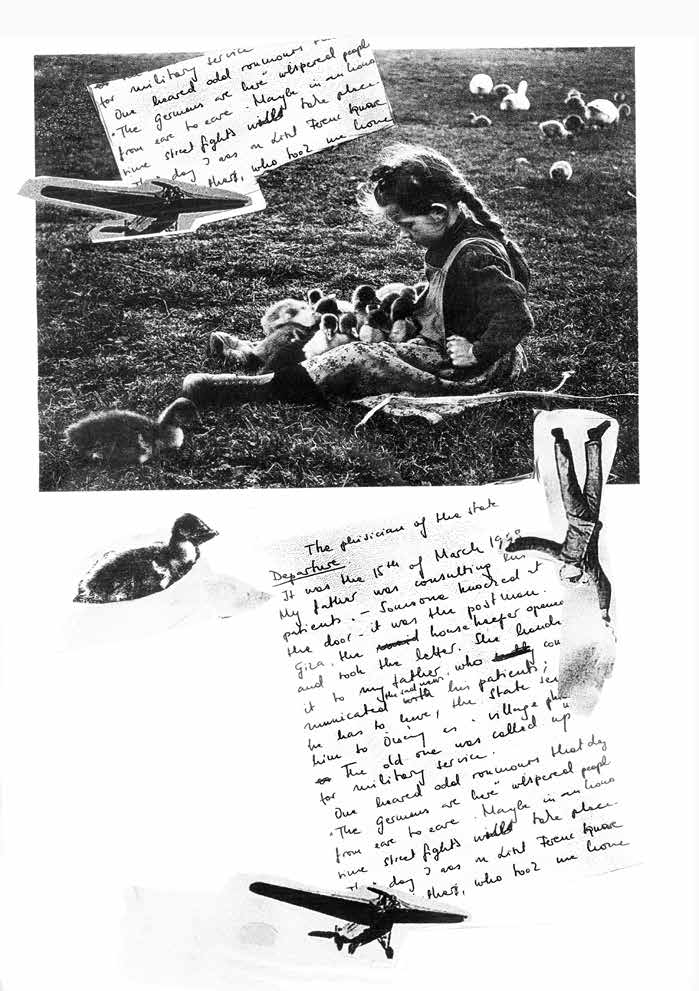
p. 50: Peasant Goose Girl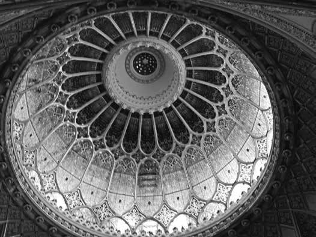
p. 52: Synagogue Stained Glass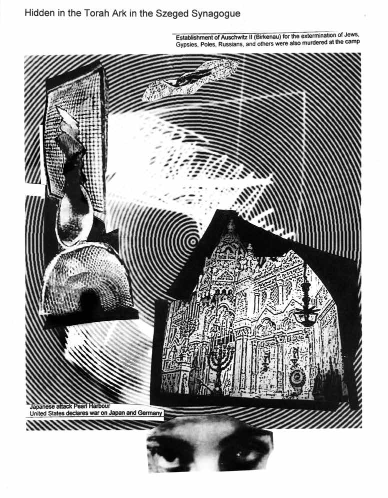
p. 56: Torah Ark, Szeged SynagogueThe Holocaust Diaries
Surviving the Nazi occupation and the Arrow Cross Party terror in Budapest. Sorel kept handwritten diary leaves on scrap paper, documenting her observations and daily walks with her father and their dachshund Csumi, capturing historical trauma through raw mark-making.
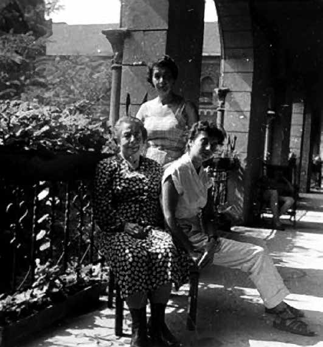
p. 67: Rákoczy Street Flat, 1955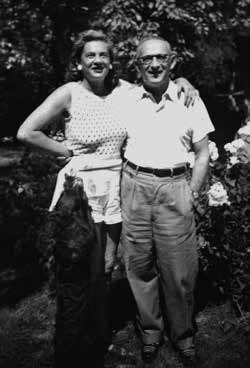
p. 68: Gyula and Lilly p. 82: Corvinus Manuscript Page
p. 82: Corvinus Manuscript Page
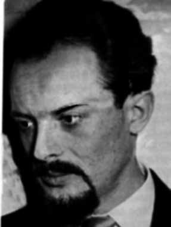
p. 87: Sándor Lévai PortraitPost-War Budapest & Communist Regime
Following liberation by the Russian Army, Hungary transitioned into a restrictive Communist regime under Mátyás Rákosi. Sorel pursued formal artistic guidance under the modernist painter Margit Graber, developing her technical draftsmanship under severe geopolitical constraints.
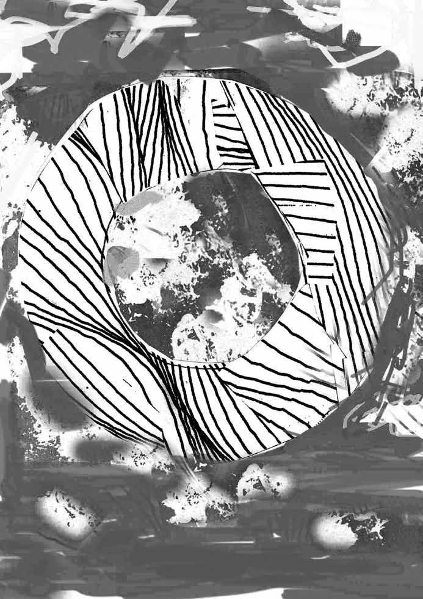
p. 97: Chronos in Black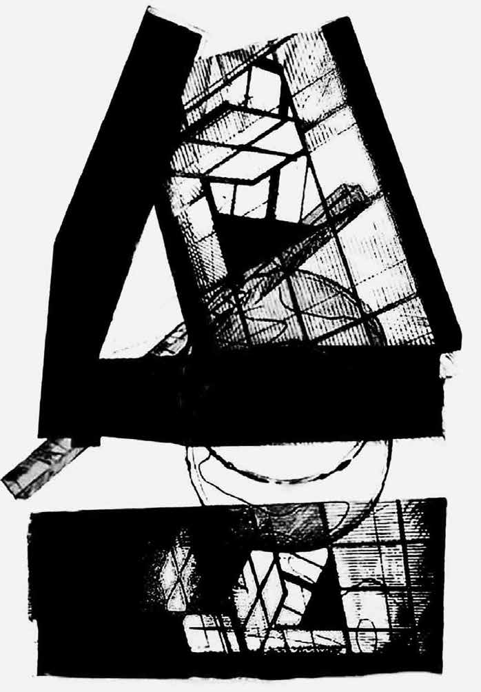
p. 101: Raoul Wallenberg Entry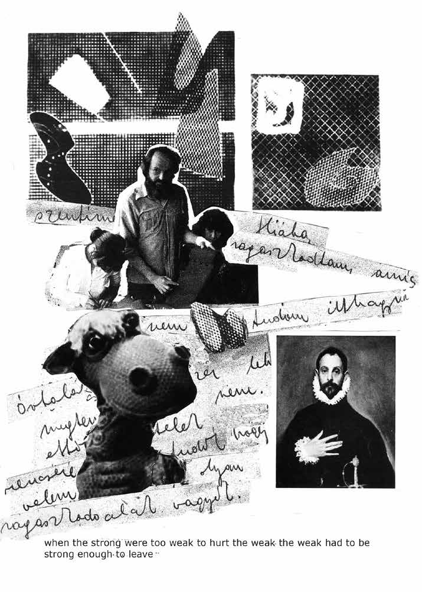
p. 88: Saying Farewell to Budapest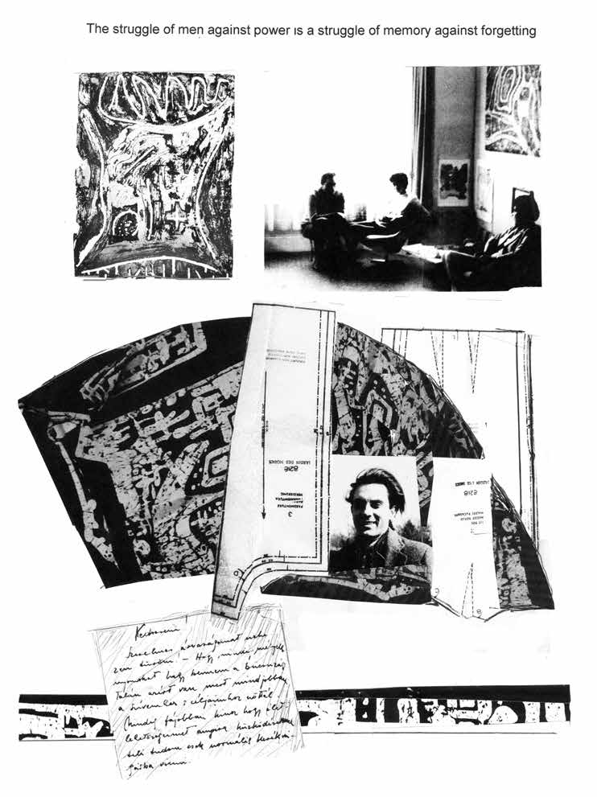
p. 92: Late Budapest DrawingChronology of Upheaval
A chronological synthesis of the war and post-war years, documenting the historical milestones of Sorel's development. This section acts as a structural bridge, summarizing the lessons of survival and early creative principles that she carried out of Hungary.
 p. 2: To Challenge (1986)
p. 2: To Challenge (1986)
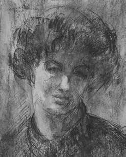
p. 14: Self-Portrait (1956) p. 20: Rust (1969) — Rothenstein
p. 20: Rust (1969) — Rothenstein
 p. 22: Seven Colours Boxes
p. 22: Seven Colours Boxes
Projections in Space and Time
The preface to Sorel's second volume introduces her artistic philosophy and transition to the West. She outlines the concept of the line as a physical, three-dimensional entity traversing different geographical spaces, setting the stage for her subsequent technical innovations.
 p. 19: Rothenstein in his Studio
p. 19: Rothenstein in his Studio
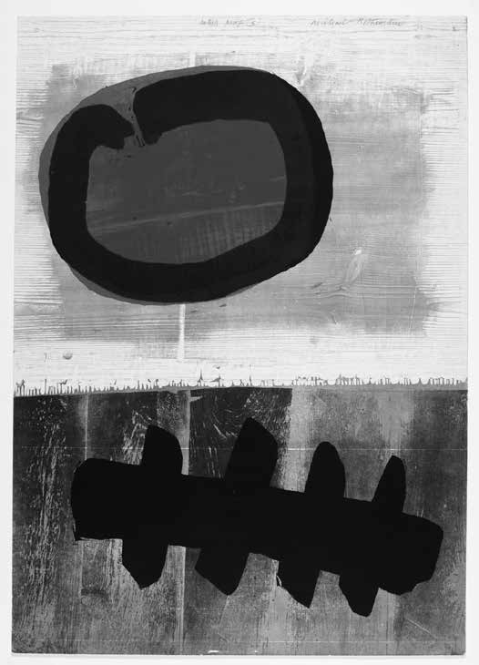
p. 21: Black Bar (1962) p. 22: Rothenstein Moonscape Boxes
p. 22: Rothenstein Moonscape Boxes
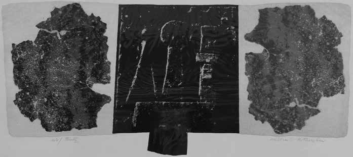
p. 20: Rust (1969) — RothensteinEscape to the West & London
Escaping Budapest during the chaos of the 1956 Uprising, Sorel traveled via ambulance to Yugoslavia, then by train to Vienna, before flying to London. Settling in Brick Lane, she entered Camberwell to study printmaking, adjusting to life as a refugee in England.
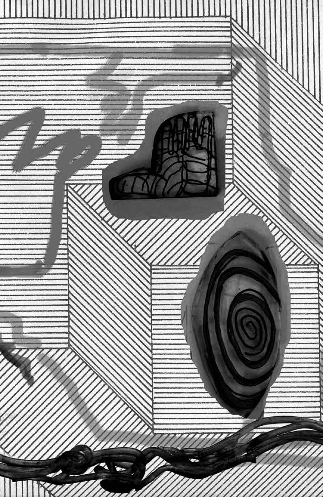
p. 25: Hand and Eye Coordination p. 30: Picasso in Vallauris
p. 30: Picasso in Vallauris
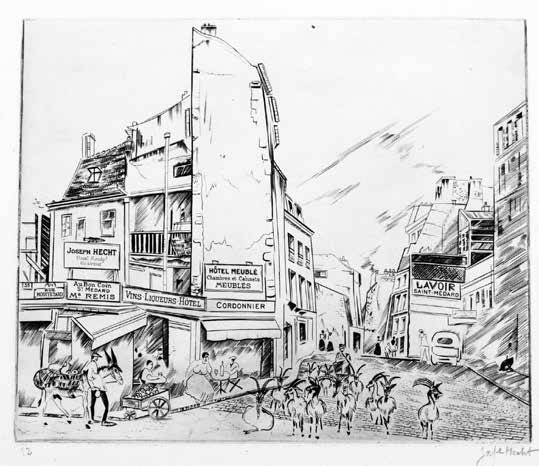
p. 35: Pont de Flanders — Hecht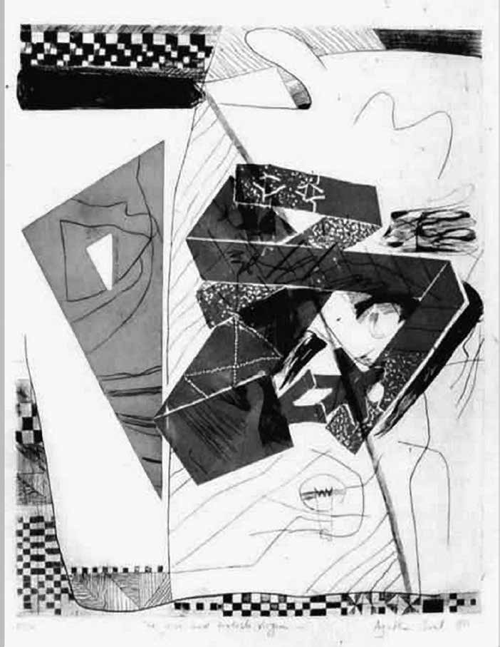
p. 53: The Wise and Foolish VirginsAtelier 17 & Paris Exploration
Awarded a Gulbenkian Foundation scholarship, Sorel moved to Paris. She studied modern French literature at the Sorbonne and worked under S.W. Hayter at the legendary Atelier 17, mastering fluid line viscosity printing and deep intaglio techniques.
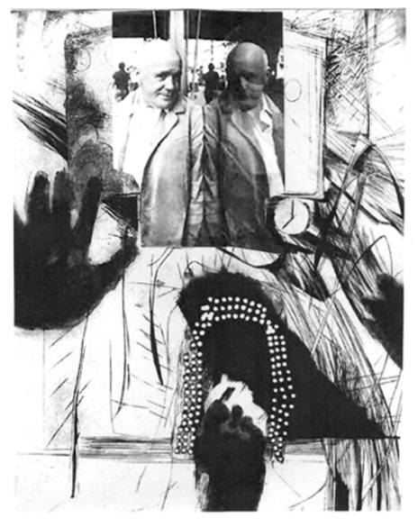
p. 61: Sorel Abstract Print Layout p. 94: Titania — Carmen Garcia
p. 94: Titania — Carmen Garcia
 p. 57: Central Heating Installation
p. 57: Central Heating Installation
 p. 97: The Visionaries (2016)
p. 97: The Visionaries (2016)
The Fulham Studio & Printmakers Council
Sorel secured a 25-year mortgage from Fulham Borough Council to build the Studio of Contemporary Art in a former migrant hostel. She taught at Camberwell and Goldsmiths and co-founded the Printmakers Council of Great Britain (PMC) to support independent printmakers.
 p. 101: Zeus (1965) — Sam Maitin
p. 101: Zeus (1965) — Sam Maitin
 p. 126: Nazi Drawings — Lasansky
p. 126: Nazi Drawings — Lasansky
 p. 101: John Donne Poster Poem
p. 101: John Donne Poster Poem
 p. 108: Dark Visit (1948) — Peterdi
p. 108: Dark Visit (1948) — Peterdi
North American Dialogues
Supported by a Churchill Trust grant, Sorel traveled annually across North America, lecturing and exhibiting. She engaged in creative exchanges with Mauricio Lasansky and Bertha von Moschizker, presenting her works at the Philadelphia Print Club.
 p. 129: Welcome Arch (1971)
p. 129: Welcome Arch (1971)
 p. 156: Corpus Hypercubus — Dali
p. 156: Corpus Hypercubus — Dali
 p. 130: Pool on the 30th Floor
p. 130: Pool on the 30th Floor
 p. 142: Ego the Goat (1985)
p. 142: Ego the Goat (1985)
Space Engravings & Late Career
Sorel pioneered printing on synthetic acrylic sheets to achieve pure color without chemical metal reactions. This led to her signature freestanding 3D "Space Engravings," such as the Welcome Arch, which explore transparency, light refraction, and shadow play.
Material Innovations & Methodologies
A record of pioneering printmaking techniques, three-dimensional engravings, and structural assemblages developed by Agathe Sorel.
Pure Color: The Shift to Perspex Plates
"In the 1960s, seeking a way to achieve absolute color purity unmarred by the chemical interactions inherent to copper and zinc plates, Agathe Sorel independently pioneered printmaking on synthetic acrylic sheets. By substituting traditional metal with worked Perspex, she unlocked a method for drypoint and mezzotint that preserved the vivid, luminous essence of fine art pigments—a technique that ran parallel to highly guarded commercial currency printing secrets of the era."
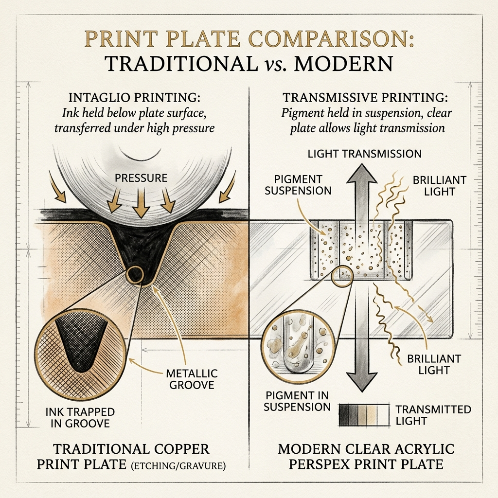
Left: Grooved copper plate capturing ink under pressure. Right: Transmissive suspended pigment in clear acrylic, preserving original luminosity.
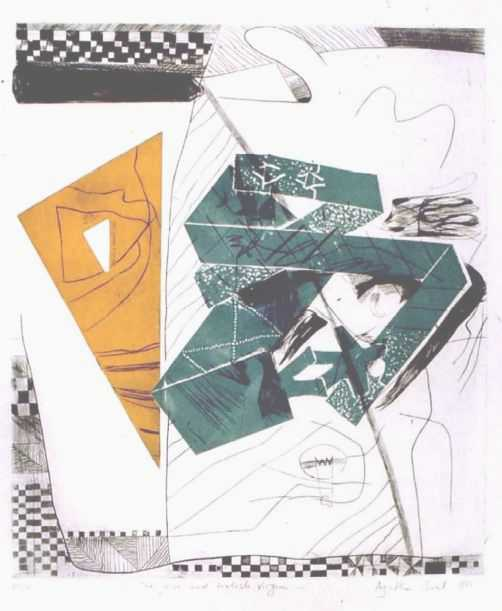
The Wise and Foolish Virgin (1966) — Exploded View Matrix
Hover over markers 1–4 to examine the layered triptych assemblage.
Assembling the Print: The Multi-Plate Triptychs
"Moving beyond the constraints of the single-plate system, Sorel approached printmaking as an act of architectural engineering. Her seminal 1966 work, The Wise and Foolish Virgin, shattered conventions by integrating line engraving, aquatint, found acrylic drawing tools, photogravure, and a low-relief hammered bronze plate into a singular, cohesive impression. This radical framework transformed the printing press into a site for multidimensional assemblage."
Projections in Space: Printmaking in Three Dimensions
"Sorel’s defining contribution to modern sculpture was her creation of 'Space Engravings.' By executing her precise, fluid line engraving directly onto freestanding, transparent plastics and heat-molded acrylics, she liberated the graphic line from paper. In masterpieces like Welcome Arch (1971), ambient light replaces the gallery wall, projecting engraved lines as dynamic shadows that change with the viewer's movement."
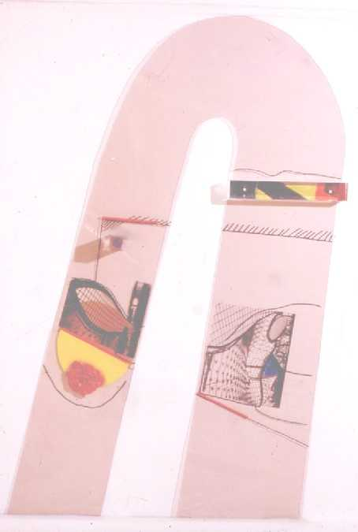
Welcome Arch (1971). Engraved acrylic sheets, 1800 x 1120 x 100 mm. Projecting moving shadows in three-dimensional space.
Public Collections & Exhibition Services
Agathe Sorel's artwork is represented in premier public collections worldwide. We support museum professionals, independent curators, and galleries by facilitating loan requests, providing high-resolution archival media files, and assisting in exhibition research.
Key Institutional Collections
- The Tate Gallery, London
- British Museum, London
- Victoria and Albert Museum (V&A), London
- British Library, London
- Arts Council of England, London
- Government Art Collection, London
- Ashmolean Museum, Oxford
- Fitzwilliam Museum, Cambridge
- Royal College of Art, London
- National Gallery of Art, Washington, D.C.
- Museum of Fine Art, Philadelphia
- Smithsonian Institution, Washington, D.C.
- Library of Congress, Washington, D.C.
- New York Public Library, New York
- Boston Museum of Fine Arts, Boston
- Chicago Art Institute, Chicago
- Los Angeles Museum of Fine Art (LACMA), Los Angeles
- Fogg Museum, Cambridge, MA
- Stedelijk Museum, Amsterdam, Netherlands
- Copenhagen Museum, Copenhagen, Denmark
- Bibliothèque Nationale, Paris, France
- Israel Museum, Jerusalem, Israel
- Museum of Art, Skopje, North Macedonia
- Town Hall Collection, Tias, Lanzarote
- Town Hall Collection, Hong Kong
Curatorial Inquiries & Requests
Submit loan queries, media access requests, or private catalog inquiries. The estate coordinator will respond within 3 business days.
Media Resource Center
Welcome to the media resource room for the Estate of Agathe Sorel. Below are official publications, digital press guides, and high-resolution media resources formatted for institutional use.
Curator & Media Downloads
Complete Exhibition Histories (PDF)
Comprehensive catalog detailing solo shows, group exhibitions, and awards since 1959.
Press Photograph Kit (ZIP)
Archival high-resolution image assets with metadata and copyright clearance tags.
Historical Essays & Curation Guide (PDF)
Sample essays from art historians Julia Weiner and Professor David Ferry on Space Engraving.
Need Custom Material?
If you require specific academic transcripts, copyright approvals, or have custom curatorial requests, please submit an official query using our form.
External References & Articles
Explore additional scholarly articles, public archives, and exhibition records detailing the life and work of Agathe Sorel:
Roseberys: Sorel & Sitkey Collection →
A feature article highlighting rare early prints by Gauguin, Munch, and Bomberg from the personal art collection of Agathe Sorel and Gabor Sitkey.
Tate Collection Profile →
View artworks by Agathe Sorel represented in the permanent collection at Tate Britain.
British Museum Collection Search →
Search the online catalog of Agathe Sorel's prints, drawings, and acquisition logs in the national archive.
Printmakers Council →
Exhibition history and details from the artist council Sorel co-founded in 1965.
Printmaking Networks & Connections
An interactive mapping of post-war graphic art circles, pedagogical lineages, and technical collaborations.
About the Network Graph
This interactive network visualizes the complex web of relationships surrounding Agathe Sorel, mapping the pedagogical lineages, collaborative print workshops, and technical exchanges that defined post-war printmaking in Britain, France, and North America.
How the Data Was Sourced: This is an early draft based on LLM interpresetations and more work is needed to validate the connections. The connections shown here are from institutional archives exhibition catalogs, and Agathe Sorel’s own memoirs, From Darkness to Hope and Projections in Space and Time. The network documents the direct pedagogical lineages (who studied under whom), co-founders of crucial institutions, professional placements, and how specific printmaking techniques (like simultaneous multi-color viscosity printing or space engravings on Perspex) were co-developed or transferred between artists.
Reading the Graph:
- Nodes: The circles and shapes represent different entities in Sorel's universe—Artists (green circles), Institutions & Studios (purple squares), and specialized Techniques (gold diamonds).
- Edges: The directional arrows represent the relationships connecting them (e.g., studying under a master, co-founding a society like the Printmakers Council, or working at a workshop like Atelier 17). Hovering over a line reveals historical context.
- Interactive Explorer: Click any node to open its detailed biography, primary mediums, and direct connections in the sidebar. Click on a relationship line (edge) to view the documented historical context of that link. Explore the curated scholarly narratives in the sidebar to trace specific historical themes.